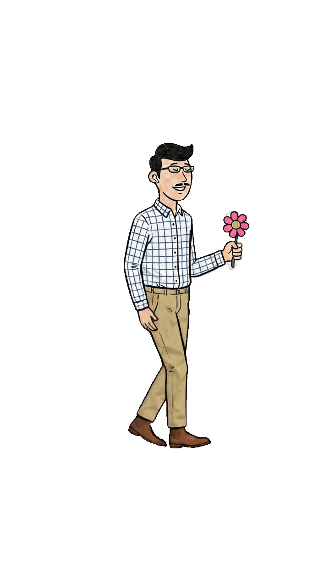

Voice First AI · Proactive & Context-Aware
一个会成长的 AI 伙伴
从线性对话中提取结构化知识，拥有自己的「主体性」
市面上的语音助手本质上都是「快速搜索引擎」——你问，它答。对话结束，上下文清零。它们没有记忆、没有主动性，更不理解你的世界。
Voice Helper 的出发点很简单：如果 AI 能像真正关心你的人一样——记住你说过的、理解你没说的、在你需要时主动出现——那会是怎样的体验？
不只回答问题，还会主动关心、提醒、分享。基于学习到的模式和上下文信号，在用户需要之前就提供帮助。
记住对话中的重要信息，通过 Mem0 向量化存储形成长期知识积累，支持语义检索和跨会话回忆。
从每次交互中学习，不断优化对用户的理解和回复质量。越用越懂你。
理解人际关系网络，记住用户重视的人事物，在合适的时机主动提及和关怀。
Architecture Glimpse
Voice Helper 采用独特的双模型混合架构：语音交互层使用 OpenAI/DashScope Realtime API 实现超低延迟（<1.5s），而智能决策层（状态机、记忆检索、意图判断）全部由阿里云 DashScope Qwen 驱动，兼顾速度与中文能力。
OpenAI gpt-4o-mini-realtime 或 DashScope qwen3.5-omni-plus-realtime · Server-side VAD · 打断机制 (Barge-in) · 长篇模式自动切换
DashScope qwen-plus 对话 + qwen-turbo 判断决策 · 异步后台处理管线 · 不阻塞音频热路径
Mem0 + Qdrant 向量存储 + text-embedding-v3 · 结构化事实提取 · 跨会话语义检索
Model Context Protocol via FastMCP · Web 搜索工具 · SSE 工具服务器架构 · 可插拔扩展设计
IDLE → ENGAGED → FADING → SILENT 四态模型 · LLM 驱动的状态转换检测 · 渐进式自主性调节
voice_config.yaml 驱动 · 音色/VAD 参数/token 上限/打断关键词 全部可配置 · 热加载无需改代码
整个系统被清晰地分为三层：用户交互层（语音/文本）、核心引擎层（对话/记忆/推理）、外部服务层（LLM API/MCP 工具）。关键设计决策：**Brain 引擎的所有 LLM 调用都在异步后台执行，绝不阻塞音频热路径**。
下方是一个真实的交互式 Demo。你可以直接输入消息与 Voice Helper 对话。当前运行在模拟模式（无需后端即可体验），部署 Render 后端后将自动切换到真实 AI 对话模式。
Phase 1 Capabilities
--mode realtime 超低延迟语音 (~1s) · --mode fast Agents SDK 低延迟 · --mode agents 全功能含 MCP 搜索
LLM 驱动的静默模式切换 · 在 SILENT 中仅倾听不回应 · 支持静默指令执行（设闹钟/记笔记）· Beep 确认反馈
IDLE 状态下的定时扫描 · 基于记忆和上下文判断是否值得主动说话 · 智能退避算法避免打扰
用户可在 AI 说话时插话中断 · 触发词列表可配置（"别讲了""停下""算了"等）· 中断后立即停止并等待新输入
自动检测故事/分析请求 → 动态提升 token 上限至 300 · 口语化长输出 · 故事有头尾、分析有观点
识别时间相关提问 → 注入精确日期/星期/时间 → AI 能准确回答"现在几点""今天星期几"
Phase 1 ✅ — Now (Current State)
OpenAI + DashScope Realtime，Server VAD，<1.5s 延迟
IDLE / ENGAGED / FADING / SILENT，LLM 驱动转换
Mem0 + Qdrant，向量存储 + 语义检索
IDLE 扫描 + 智能判断 + 退避算法
Phase 2 🔮 — Memory & Analysis
从每次对话中提取结构化知识：核心论点、论证结构、隐含前提、情绪基调
关系型记忆存储：人、事、物之间的关联网络可视化
查看/编辑/删除记忆条目的 Web 界面，让用户完全掌控 AI 的记忆
Phase 3 🚀 — Social & Autonomous
自动推断关系类型（亲密/家人/同事/朋友），追踪关系强度变化
生日追踪、承诺提醒、关系维护建议 —— 真正"会来事儿"
好奇心、同理心、幽默感等多维度性格配置 + 兴趣领域主动推送
我是一名软件工程师，相信技术应该服务于真实需求。从 0 到 1 打造过多个项目，注重产品体验和技术架构的平衡。
Voice Helper 是我的第一个独立作品，从需求调研到开发上线，全程亲力亲为。这个过程让我深刻体会到产品思维和工程能力的结合有多么重要。
我的定位是「让人的思想、感受和审美被更好呈现」，这个语音助手就是一个微型的「AI × 思维延伸」产品。
// TECH_STACK
End of Voyage
Voice Helper 是一个开源项目。欢迎查看源码、提出建议、或一起构建下一代人机交互方式。